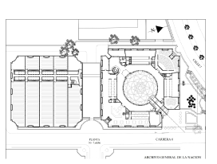
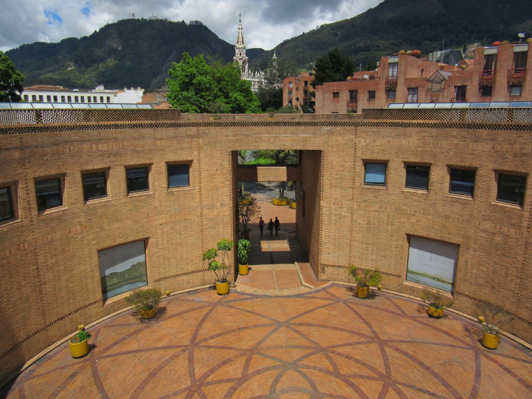

Rogelio Salmona
Proyecto
Archivo general de la nación
 
Localizado en el centro
histórico de la ciudad, el
edificio del Archivo pretende
ser la memoria de Colombia y
una obra significativa
cultural y arquitectónica,
que revele la filosofía de la
concepción archivística
moderna y junto con el
patrimonio documental que
conserva, produzca el
"milagro" de poner la memoria
al servicio de la imaginación
y de la poesía.